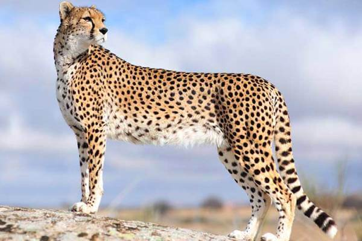
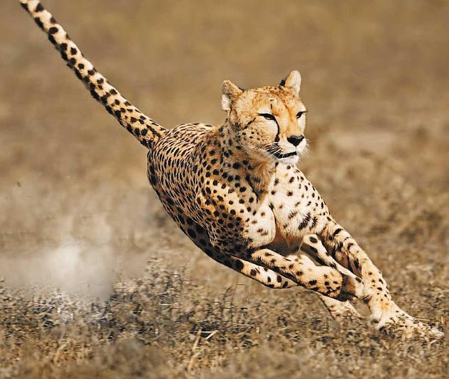

El guepardo es el mamífero terrestre más rápido del mundo. Su capacidad de aceleración, que dejaría clavados a la mayoría de los automóviles, le permite pasar de 0 a 96 kilómetros por hora en apenas tres segundos. Este gran felino es sumamente ágil cuando se mueve a gran velocidad y es capaz de hacer giros rápidos e inesperados persiguiendo a su presa. Guepardo Tamaño de un guepardo Antes de dar rienda suelta a su velocidad, el guepardo utiliza su vista excepcionalmente aguda para rastrear la sabana en busca de indicios de presas, sobre todo antílopes y liebres. El guepardo es un cazador diurno que se aprovecha de sus movimientos sigilosos y de su característica piel moteada, gracias a la cual puede confundirse fácilmente con la vegetación alta y seca. Llegado el momento, iniciará un sprint hacia su presa y tratará de abatirla. Estas persecuciones le suponen un enorme gasto de energía, por lo que suelen durar menos de un minuto. Si la persecución es fructífera, el guepardo llevará por lo general a su captura a un escondite sombreado para mantenerla alejada de los animales carroñeros, que en ocasiones se apropian de la víctima antes de que el guepardo pueda empezar a comérsela. Los guepardos necesitan beber apenas una vez cada tres o cuatro días. Guepardo Hábitat de los guepardos Las hembras dan a luz normalmente camadas de tres cachorros y viven con ellos durante un periodo que oscila entre el año y medio y los dos años. Los jóvenes cachorros pasan su primer año de vida aprendiendo de su madre y practicando técnicas de caza a la vez que juegan. Los machos viven solos o en pequeños grupos, a menudo formados por sus hermanos de camada. La mayor parte de los guepardos se encuentra en el este y el sudoeste de África. Se calcula que apenas quedan unos 12.000 guepardos en libertad, y éstos viven bajo la amenaza que supone el que sus hábitats naturales, las sabanas, estén desapareciendo a consecuencia de los asentamientos humanos.
Es un felino de gran tamaño: mide entre 110 y 150 cm de longitud, a lo cual hay que añadir una cola de entre 55 a 80 cm. Su altura a la cruz es de 74 a 90 cm y pesa entre 35 y 60 kg: los machos son de un tamaño ligeramente mayor que las hembras. El guepardo posee una anatomía especializada para la carrera. Posee el mayor corazón en proporción a su tamaño de todos los felinos, lo que le permite bombear la sangre con más fuerza hacia todo su cuerpo. Sus pulmones y fosas nasales son muy amplios para absorber más oxígeno; además, posee una larga cola, que puede alcanzar la mitad de la longitud de su cuerpo, lo cual le da estabilidad en la persecución. Sus garras no son retráctiles, a diferencia de las de los demás félidos: esta característica mejora su tracción en altas velocidades. Cuando nace, la cría tiene una abundante melena clara sobre el dorso, en contraste con la mayoría de los felinos. El guepardo es el animal terrestre más veloz del mundo: corre a una velocidad máxima de entre 95 y 115 km/h (puede alcanzar los 95 km/h en solo tres segundos), aunque, si no alcanza su presa en menos de unos cuatrocientos metros, abandona la persecución.
El guepardo es un cazador diurno, el cual se aprovecha tanto de su sigilo como de su piel moteada que le permite camuflarse con la vegetación cercana. Una vez llega el momento indicado, el felino correrá a hacía su presa para abatirla. Sin embargo, debido al gran desgaste de energía que dicha persecución tiene, estas duran menos de 1 minuto. Acostumbrado a que los carroñeros de mayor envergadura o fuerza (como la hiena, el león, el leopardo) o incluso el babuino, le roben las piezas que caza, el guepardo se ha habituado a cazar en las horas centrales del día, cuando los otros depredadores duermen. Su estructura física adaptada a la velocidad limita su capacidad de lucha y defensa, ya que su cuerpo es esbelto y fino a expensas de una musculatura potente y la fuerza en sus zarpas lo limitan al momento de enfrentarse a un oponente con dotes más defensivas. Así, es probable que el guepardo sufra una fatal derrota. Por este motivo se retira antes de que esto suceda y de este modo evita ser herido. A la hora de cazar, evita también la presencia de los turistas, que, en otros momentos menos calurosos del día, suelen estorbar con su curiosidad en el momento decisivo de la caza. El calor hará más corta su carrera, y luego todavía tendrá que arrastrar la presa hasta un escondite a la sombra donde quede a salvo de los demás. Tiene una vista privilegiada, que aprovecha para observar a sus víctimas desde la distancia, tumbado en un promontorio o subiéndose a un árbol. Es paciente y tranquilo: sabe escoger su presa y esperar el momento adecuado. Guepardo corriendo. El guepardo no se precipita durante la caza. Otros depredadores, como el león cuando está hambriento, desperdician energías corriendo sin mucho tino detrás de las presas. El guepardo, en cambio, espera. Y cuando finalmente empieza a correr, acierta en la mayoría de las ocasiones. Su efectividad se ha estimado en un 60 %, frente a poco más del 25 % que consigue el león. El guepardo logra entre 150 y 300 presas anuales, frente a las 30 o 40 que consigue el león. A diferencia del resto de los felinos, sus uñas no son retráctiles, sino que le sirven para aumentar la tracción. Puede alcanzar velocidades de hasta 115 kilómetros por hora, pero durante su formidable carrera no puede mantener esta velocidad más de 500 m. Se han verificado velocidades en los guepardos de más de 114 kilómetros por hora, pero en casos muy aislados. La velocidad media del guepardo oscila entre los 98 y los 108 kilómetros por hora. Suele cazar gacelas e impalas, aunque también atrapa crías de otros mamíferos, especialmente de ñu y cebra. Escoge la táctica de caza en función del terreno y la situación. Si el terreno le permite acercarse sigilosamente, pondrá en práctica toda su habilidad de felino para atacar desde lo más cerca posible, y aprovechar luego la desbandada para lanzarse sobre la víctima más cercana ignorando al resto. Cuando el terreno es demasiado regular, estudiará la situación desde lejos esperando que algún adulto se retrase o buscando un ejemplar más vulnerable que el resto. Si no tiene más remedio, también puede comenzar la carrera desde lejos, manteniendo una carrera de fondo que separe del grupo a alguna hembra en gestación o a alguna cría a la que atacará enseguida.